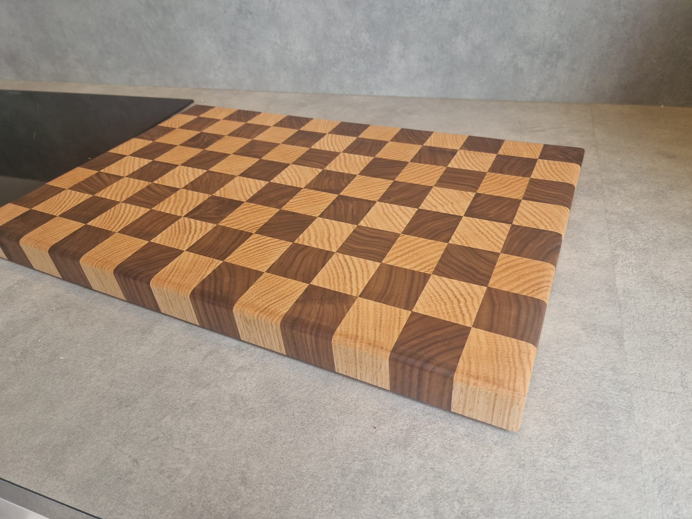
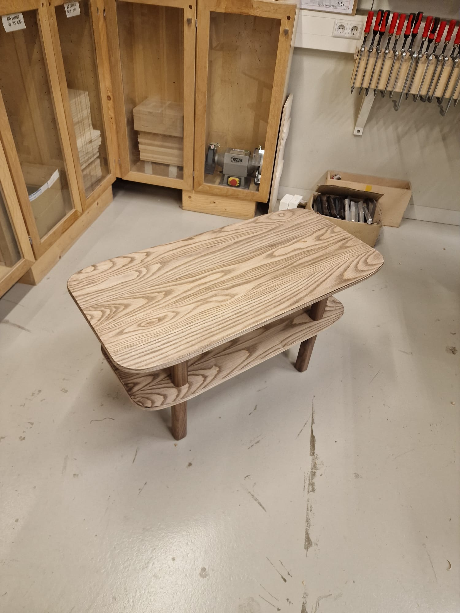

Elk project vertelt een verhaal. Dit zijn enkele van mijn recente creaties – allemaal met liefde en aandacht voor detail gemaakt. Zie je iets wat je aanspricht? Laat het me weten!

Snijplank
Keuken
Handgemaakte snijplank van mooi esdoornhout. Duurzaam en praktisch voor dagelijks gebruik.

Salonstafel
Meubel
Een tijdloos stuk waarin functionaliteit en schoonheid elkaar ontmoeten. Vakkundig uit massief hout gewerkt.

Inloopkast
Opberging
Prachtige inloopkast op maat gemaakt. Perfect georganiseerd met speciale indelingen voor kleding en accessoires.
Zitbank
Custom Design
Handgemaakte zitbank naar wens van de klant. Noten hout met stof bekleding.
Boekenkasten
Woonkamer
Set van drie zwevende kasten in gerecycled hout. Minimalistische lijnen.
Stoelen
Meubel
Set van ergonomische stoelen met gevoerde zitting. Perfect als accent pieces.